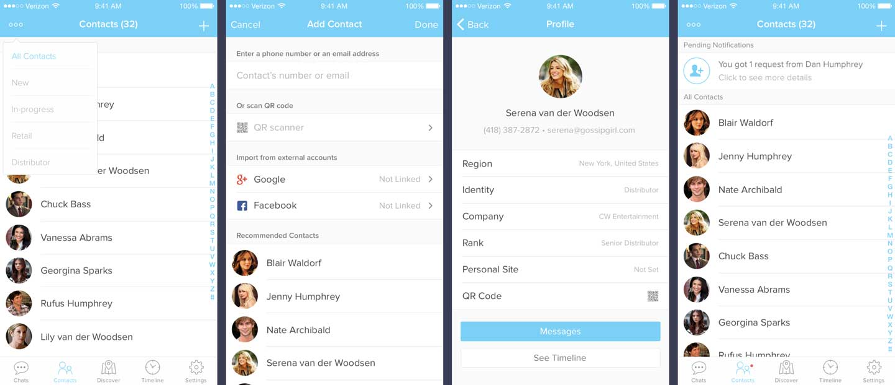

AboveGem is an iOS app that helps you manage and grow your direct selling business. I worked on designing their primary features and brainstormed different ways of connecting business with potential distributors.
Most people are not familiar with the concept of direct selling, which is a person-to-person sale of a consumer product or service away from a fixed retail location, marketed through independent sales representatives. Moving from traditional way of direct selling, companies nowadays hold a couple of sales and marketing conventions every year to attract potential distributors to join their business and connect with more customers.
Although companies have attracted a lot more attentions from people who are interested in their business by holding conventions, it is still not efficient enough to get people connected easily through these events.
We discovered the following problems:
There are a couple of steps for people who are interested in direct selling business to get in touch with distributors and retailers. Attendees who join the conventions are either distributors & retailers or potential distributors who are interested in the business. Conventions serve as a means of inviting more people to join as distributors. During the convention, an existing distributor connects with a potential distributor and becomes a so-called "mentor," who keeps in touch until the potential distributor starts selling the company's products.
Our main goal of this app is to help manage and grow direct selling business. To achieve this, we further defined our three value propositions:
When we were brainstorming ideas, I found out that the major challenge was how to onboard users quickly and keep them engaged. One way to address this is to take advantage of the values of the local conventions as much as possible. That is, through discovering local conventions, people find opportunities to learn about a company, a product and its distributors.
In addition, to keep people connected, we decided to create a timeline feature from which users could post their events, product feedbacks as well as stories and photos. Timeline is more of a semi-business feature to let people get to know each other.
After brainstorming, we figured that starting with a recommendation of local conventions is a better idea than showing just an empty state. Otherwise, because the users won't have any connections when they first open the app, they must add contacts manually through personal connections. Instead, we can take advantage of conventions based on the industries they are interested in, and give users insights about the company and its distributors.
For onboarding experience, I focused on guiding user through our main features with an optional slide view. Users can indicate their interests in an industry to help them set up their account.
When the user completes the onboarding experience, they are taken to the Discover page. This is because by exploring nearby conventions, users can not only learn about the events held by their interested companies but also get in touch with people they may know.
Chats is the main functionality of this app. Different from most chat apps, Abovegem's chat focuses on getting users’ messages organized by identities of people they talk with. Users can also filter messages by contacts. This way, users can always learn about the topics of their messages at a glance and keep track of the progresses with their clients.
For the contacts page, I used the similar concept as the chats feature. Users can filter their contacts by identities. Scanning QR code allows users to quickly add contact even if they don’t have each others’ emails or numbers. This is particularly useful for conventions where users can just take out their phone and scan to add a contact.
In hindsight, I could have done a better job budgeting the timeline of this project. I overestimated my abilities, so I couldn't get to work on the Timeline feature and polish the rest of the design. We should have also spent more time talking with engineers from the very beginning. Some of the solutions we came up with were hard to implement so we had to give up a lot of thoughts and started over.
I also spent way too much time trying to achieve pixel perfections rather than paying attention to the details that really matter. I often realized the small features I left out that users need only after meeting with the client.
Overall, it was a pleasant experience working with the people who truly care about business and think a lot about how to make direct selling successful. I like the idea of AboveGem and I am optimistic about their vision to help more people in direct selling business get connected.